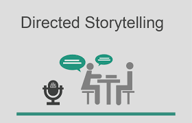

Biases with Siri
What was the goal:
Voices recognition softwares are a integral part of our lives, especially in the modern
age
however these technologies are not exempt from shortcomings. In an academic course at
Carneige Mellon a team and I conducted user research on this issue.
Our generative background
research
suggested that many voice recognition technogies today do not work well with
non-American accents, predominantly uses female voices as default for assistance, and
have prevalent data privacy concerns; many of these issues at hand are embedded in the
algorithm. Thus, the question we ask is: How might we harness everyday users’ power to
alleviate AI biases in voice recognition technologies? To better understand this we
conducted various research activities to investigate further.

What methods did we use:
We conducted:
Think-Aloud studies, Contextual Inquiries (Directed Storytelling), Semi Structured
Interviews, and Speed Dating.
To synthesize the data we:
Conducted Affinity Diagramming, Empathy Mapping, Storyboarding
Overall it was an insightful process that provided us with a survey of various UX
Methods while honing in on a specific topic.

What did I learn:
In this course and during this project I learned how to utilize a wide variety of UX Research methods along with various UX research analysis methods. Overall I worked as a project manager on a team and enjoyed presenting my findings to the final stakeholders.